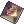

Automated Events
NovaRO has several automated events in which everyone logged in can participate. They activate multiple times a day so watch for them carefully if you're trying to pile up your coins! When it's time for one to begin, the specific event is periodically broadcast to all players for a few minutes before the entrance is closed. This gives everyone a chance to get there before things get started. Anybody can participate in these, and the winners usually gain Gold Coins or other useful items.
Timetable
Keep in mind that events start five minutes later (except for Battleground happy hour) , meaning that an event listed here as 20:00 will start at 20:05.
| Name | Server time | |||||||||||
|---|---|---|---|---|---|---|---|---|---|---|---|---|
| 00:00 | 01:00 | 02:00 | 03:00 | 04:00 | 05:00 | 06:00 | 07:00 | 08:00 | 09:00 | 10:00 | 11:00 | |
| Dice | ✓ | ✓ | ||||||||||
| Disguise | ✓ | |||||||||||
| Mysterious Slot Machine | ✓ | ✓ | ||||||||||
| Happy Hour: Battlegrounds | ✓ | ✓ | ✓ | |||||||||
| Name | Server time | |||||||||||
|---|---|---|---|---|---|---|---|---|---|---|---|---|
| 12:00 | 13:00 | 14:00 | 15:00 | 16:00 | 17:00 | 18:00 | 19:00 | 20:00 | 21:00 | 22:00 | 23:00 | |
| Dice | ✓ | ✓ | ||||||||||
| Disguise | ✓ | ✓ | ||||||||||
| Mysterious Slot Machine | ✓ | ✓ | ||||||||||
| Happy Hour: Battlegrounds | ✓ | ✓ | ||||||||||
Descriptions
Dice Event
Pick a number, 1, 2, 3, or 4-and then go sit near that number's physical location on the map. Once the doors close and the event begins, click on the small square with your number on it that sits slightly above the pens with the larger, yellow ones. It will countdown from 5, and if your number was picked, you won! If not, you will warp to Prontera. Now all you have to do is click the small sign near the top-left on the pens labeled "Go Back." Walk up and to the center of the room, and finally click on the sign that says "Claim your prize!", to exit with your gold coins!
- Reward: 10
 Gold Coins
Gold Coins
Disguise event
The NPC will make an announcement 3 minutes before the event starts. This event is held slightly below the lower center of Prontera, where you will see a soldier/guard NPC with a small grid cleared around them. Once the event begins, this NPC will disguise randomly into a Monster for a couple of seconds. In your regular chat box, type in as fast as you can the exact name of the monster! The person that says the name first correctly wins the round. If nobody can guess the correct name within a short time, the round will end and the correct answer will be revealed, moving on to the next monster.
- Reward: 5 Gold Coins / round
Mysterious Slot Machine
A clickable slot machine NPC spawns at the specified times slightly southeast of the lower center of Prontera. Once the Slot Machine arrives, players then have 5 minutes to play the machine, each lever pull will cost the player 2 Gold Coins. The machine has a variety of different goodies inside, including three jackpot rewards. You'll have to test your luck at the Slots to find out what other goodies the machine holds. Good luck!
- Jackpot:
- Prize:
- 1, 2, 5, 10, 25, 50, 100, 200, 500 Gold Coins (need more confirmation)
 Gym Pass
Gym Pass Convex Mirror
Convex Mirror Bloody Branch
Bloody Branch-  Steamed Tongue
- Steamed Desert Scorpions
 Immortal Stew
Immortal Stew Dragon Breath Cocktail
Dragon Breath Cocktail Hwergelmir's Tonic
Hwergelmir's Tonic Cooked Nine Tail's Tails
Cooked Nine Tail's Tails Kafra Card
Kafra Card Silvervine Fruit
Silvervine Fruit Abrasive
Abrasive Guyak Pudding
Guyak Pudding Potion of Rejuvenation
Potion of Rejuvenation Mega Potion of Rejuvenation
Mega Potion of Rejuvenation Potion of Energy
Potion of Energy Mega Potion of Energy
Mega Potion of Energy Reversal Voucher
Reversal Voucher Combat Rations 30m
Combat Rations 30m Enriched Elunium
Enriched Elunium Enriched Oridecon
Enriched Oridecon HD Carnium
HD Carnium HD Bradium
HD Bradium Nova Point Voucher
Nova Point Voucher- and more (need confirmation if this list is complete or not)

Happy Hour: Battlegrounds
During these periods of times, all Battleground rewards are doubled.
- Reward: Rewards are increased by 50%